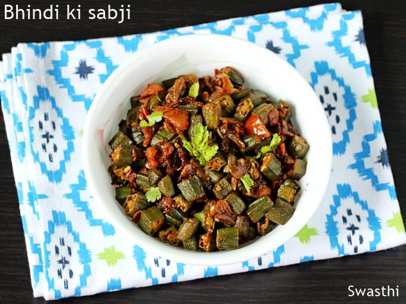

Bhindi ki Sabzi

Description
Bhindi ki sabji is a simple, easy, and tasty vegan recipe of a mildly spiced dry okra curry that tastes delish with some Indian breads like roti or phulka. Bhindi sabzi also makes for a comforting meal with dal and rice – a perfect Indian meal accompanied by some mango pickle or raita or salad.
Ingredients
- Ladies Finger - 15 chopped into thin rounds
- Oil - 2 tblspn + 1 tblspn
- 1 tablespoon olive oil
- Mustard Seeds - 1 tsp
- Onion - 1 chopped finely
- Tomato - 2 chopped finely
- Turmeric Powder - 1 tsp
- Chilli Powder - 1 tsp
- Coriander powder - 2 tsp
- Salt to taste
Steps
- Heat 2 tblspn oil in a pan, add lady finger and saute till golden brown, drain and set aside.
- Now in the same pan, add more oil if needed, add mustard and urad dal and let it sizzle.
- Now add onions and cook till golden.
- Add in tomatoes and cook till mushy.
- Add salt and spice powders and mix well.
- Add in the lady finger and mix well.
- Serve.
Return to homepage